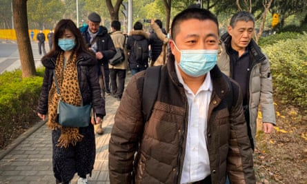

A decade on from China’s biggest crackdown on human rights lawyers in modern history, lawyers and activists say that the Chinese Communist party’s control over the legal profession has tightened, making rights defence work next to impossible.
The environment for human rights law has “steadily regressed, especially after the pandemic”, said Ren Quanniu, a disbarred human rights lawyer. “Right now, the rule of law in China – especially in terms of protecting human rights – has deteriorated to a point where it’s almost comparable to the Cultural Revolution era.” The Cultural Revolution was a decade of mass chaos unleashed by China’s former leader Mao Zedong in 1966. During that time judicial organs were attacked as “bourgeois” and the nascent court system was largely suspended.
Ren is one of hundreds of human rights lawyers to have been targeted since the “ 709 incident ”, a nationwide crackdown on lawyers and activists that started on 9 July 2015. According to human rights groups and the US government, about 300 people from the loose collective of a burgeoning rights defence movement, known as weiquan , were targeted in the round-up. At least 10 were convicted of crimes such as “subversion of state power” and given jail terms, while dozens more have been subjected to surveillance, harassment and the revocation of their professional licences in the years since.
Modern China has never welcomed human rights lawyers. But in the relatively open years of the early 2000s, with the rise of the internet and China’s increasing desire for approval on the world stage, the space for civil society grew to a degree that is now almost unrecognisable. Lawyers scored wins for defendants in cases ranging from tainted baby milk formula scandals to the abuse of migrant workers.
Ren QuanniuPhotograph: supplied
“It’s hard to say we achieved success – we can only say that the services we provided have made it more difficult for the authorities to persecute certain groups,” said Jiang Tianyong , a 54-year-old former human rights lawyer known for taking on cases involving religious and ethnic minorities who served two years in prison for “inciting subversion of state power”.
But the nascent movement that Jiang was part of was suppressed soon after Xi Jinping, China’s leader, took power in 2012.
A suppression that is less visible
Although some weiquan lawyers were also interested in political reform, most were focused on working within the existing Chinese system. The daily grind was not about promulgating foreign ideas, said Ren. It was about defending ordinary citizens “based on the existing laws of China itself, the laws of the Chinese Communist party’s own legal system. Yet even within that framework, the lawyers were not allowed to help.”
Under Xi’s rule, activists have been rounded up, independent law firms and NGOs have been reined in , and any kind of organised activity outside the auspices of the Communist party (CCP) has been tightly restricted.
Lawyer Ren Quanniu, representing Chinese citizen journalist Zhang Zhan who reported on Wuhan’s Covid-19 outbreak, in 2020.Photograph: Leo Ramirez/AFP/Getty Images
“The Chinese government under Xi Jinping has sought to eradicate the influence of lawyers who defend people’s rights,” said Maya Wang, associate China director at Human Rights Watch.
Ten years on from the crackdown, human rights workers say that the suppression of independent lawyers has become more systematic, and less visible, than rounding up individuals. Those affected by the 709 incident describe living under conditions of harassment and surveillance, and are often blocked from leaving the country. Jiang hasn’t seen his wife and daughter, who left China, in over a decade.
More broadly, lawyers working on cases that the CCP considers sensitive have been stripped of their professional credentials, while legal and political reforms have strengthened the role of the CCP in law firms.
Ren escaped the first wave of reprisals after the 709 incident. For a few years, he tried to keep on taking up sensitive cases, including that of Zhang Zhan , the citizen journalist who was jailed after reporting from Wuhan on the early days on the Covid-19 pandemic.
In 2021, his licence was revoked.
Jiang Tianyong, who appeared in court in 2017 (top).Photograph: AFP/Getty Images/ supplied
According to data gathered by Chinese Human Rights Defenders, a US-based NGO, between 2017 and 2019, there were 29 cases of law firms or lawyers having their licences revoked or suspended, compared with nine cases between 2014 and 2016.
At the same time, China has expanded the provision of legal aid, which the government says will “benefit more people in need”. According to a Chinese study published in 2022, 60% of defendants with legal representation would receive government-sponsored legal aid. But the legal aid law states that its aim is to “uphold the leadership of the Chinese Communist party” and critics say that the changes, which include the insertion of Xi Jinping Thought into the charter of the All-China Lawyers Association, have narrowed the space for independent lawyers.
“The Chinese government has been increasing ideological control throughout the legal profession while also increasing the provision of public legal services, and at the same time requiring those legal services be provided by lawyers who are loyal to the party,” said Wang.
Many of China’s human rights lawyers say their work has been pushed underground. Those without licences try to offer informal advice to people in need, but their ability is severely limited.
Under these conditions, “no one is truly safe,” said Xie Yanyi, a lawyer detained in the 709 crackdown. “Human rights belong to everyone, and the rule of law protects everyone.”
Still, Xie remains hopeful for the future. “Although the year of the 709 incident marked a major regression in the rule of law in China … people, I believe, are gradually building resilience, maturing and becoming stronger.”
China’s Ministry of Justice and Public Security Bureau did not respond to a request for comment.